文艺复兴时期突破性地运用了透视法来追求理想比例之美，让画家与科学家走到了一起。正如数学家不断探索透视法背后的数学原理一样，画家也在研究射影几何，并利用它来描绘出逼真的三维场景。达·芬奇与拉斐尔、丢勒等人对这些研究取得成功起到了关键的作用。
1435年，透视法的奠基之作《绘画论》问世，作者为莱昂·巴蒂斯塔·阿尔伯蒂。阿尔伯蒂在该书中解释了实物的画法。正如那两句名言一样，“对画家的第一个要求是要懂得几何”，“绘画是一扇打开的窗，我们透过窗看到了绘画对象”。他的思想改变了一切。
阿尔伯蒂一心寻找能够指导艺术家创作的理论和实用性原则，因此他的作品中包含了大量的绘画原理。他在《雕塑论》（On Sculpture）中详细解释了人体的比例；在《绘画论》中最先提出了透视法的科学定义；而在《建筑论》中，他阐述了自己对现代建筑的观点，其中充满了黄金比例的思想。
莱昂·巴蒂斯塔·阿尔伯蒂（1404—1472）
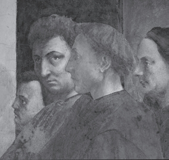
布兰卡契礼拜堂中的著名壁画，马萨乔从左到右依次画了马索利诺、他自己（正在看着我们）、阿尔伯蒂和布鲁内莱斯基。
1404年，阿尔伯蒂出生在热那亚。当时，建筑大师布鲁内莱斯基正处于创作的巅峰时期。阿尔伯蒂是个私生子，他的父亲是佛罗伦萨一位富有的商人兼银行家，由于政治原因被驱逐出了托斯卡纳。
阿尔伯蒂是文艺复兴时期的杰出人物：他主要致力于建筑、数学、诗歌，但也研究语言学、哲学、音乐甚至考古学。他是文艺复兴时期的第二代艺术家中最具代表性的人物之一。他认为，“艺术家不只是工匠，而是在各领域的学科中受过教育的知识分子”。他曾为著名的商人和人文主义者乔凡尼·迪·保罗·鲁切拉伊担任建筑师，并且根据黄金比例为他在佛罗伦萨设计了新圣母马利亚教堂正面的一部分。他的设计在建筑史上堪称杰作，我们在此只举两个例子，一个是鲁切拉宫，另一个是美第奇别墅。
1472年，阿尔伯蒂在罗马去世。他在忙碌的一生中为后世留下了难忘的作品以及具有深远影响的观点。阿尔伯蒂的接班人在其去世前就已经崭露头角，他就是年仅20岁的列奥纳多·达·芬奇。
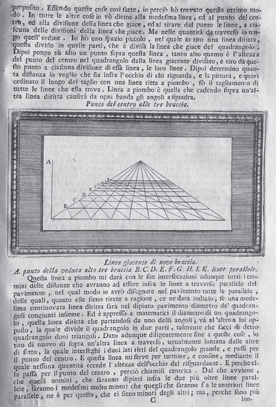
阿尔伯蒂的首部著作《绘画论》中的一页，1733年版，印刷雕版由弗朗西斯科·赛松雕刻。
达·芬奇不断研究透视法，这种技法是他一生中的巅峰成就。这位伟大的天才肯定地说：“透视法是绘画的缰绳和船舵。”达·芬奇对后来的许多艺术家产生了深远影响，特别是阿尔布雷希特·丢勒。丢勒同样喜欢研究科学的绘画原理。虽然我们无法直接证实达·芬奇使用了黄金比例，但是在他的许多作品中，比如《最后的晚餐》的构图就多次使用了这一比例，尤其是黄金矩形。这种巧合实在令人不可思议。
在《最后的晚餐》中，达·芬奇不仅用黄金矩形确定了桌子的尺寸，还确定了坐在桌子周围的耶稣及其门徒的位置。就我们所知道的来说，画中房间的墙壁和后面的窗户都符合黄金比例。
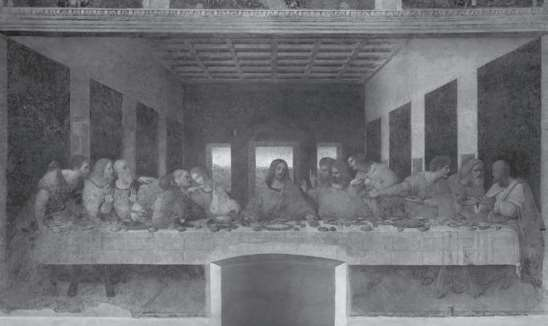
《最后的晚餐》，达·芬奇绘。画中的各部分显示出了黄金比例。
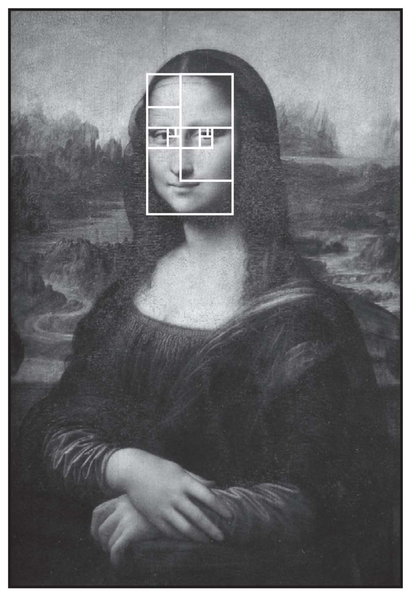
叠加在蒙娜丽莎脸上的黄金矩形。
就连肖像画《蒙娜丽莎》也受到黄金比例的影响。某些研究已经证实，从整体和细节两方面来看，画中模特的脸是由一连串大小不一的黄金矩形构成的。
总体而言，文艺复兴时期的艺术家的确受到了黄金比例的影响。即使这种影响可能只存在于潜意识层面，但他们已将黄金比例运用到了各个层次的细节上。五角星帮助他们利用空间，比如确定人物在画中的分布。黄金螺线的运用也是出于这一相同的目的。米开朗琪罗的《圣家族》展示了如何利用五角星来构图。在皮耶罗·德拉·弗朗切斯卡的《鞭打基督》（Flagellation）和桑德罗·波提切利的《维纳斯的诞生》（Birth of Venus）中，他们利用黄金比例创造的形象格外迷人。寻找隐藏在这些作品中的几何结构让欣赏过程变得十分有趣。
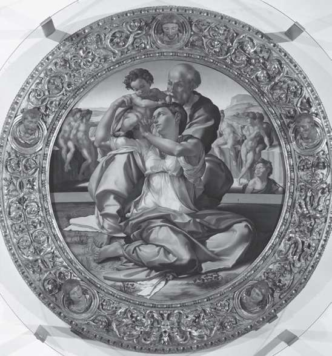
《圣家族》，米开朗琪罗绘。我们可以清楚地看到他以五角星为基础进行了构图。
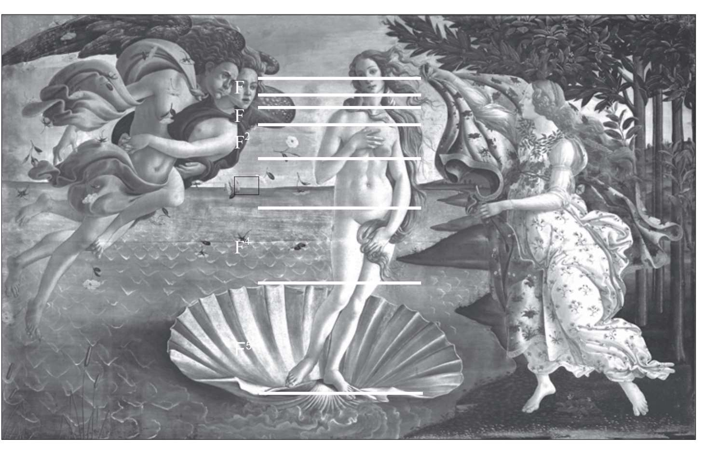
《维纳斯的诞生》，桑德罗·波提切利绘。水平线标出了画中的黄金比例。
久负盛名的阿尔布雷希特·丢勒始终追寻着达·芬奇的脚步。1525年，他出版了首部德文数学著作《使用圆规、直尺的量度指南》（Instruction in Measuring with Compass and Straightedge），通常简称为《量度四书》（Four Books of Measurement）。身为画家、数学家的丢勒在这本书中阐释了美的哲学：
“美体现在各部分之间以及各部分与整体之间的和谐中……各部分需要恰当地绘制，也需要恰当地编排来创造整体的和谐……因为构图元素的和谐即是美。”《量度四书》中记录了大量的曲线结构，例如蚌线、阿基米德螺线以及由黄金比例演变而来，同时也是当时最为著名的丢勒螺线。该书提供了某些精确（和粗略）的方法来绘制正多边形。《量度四书》中探讨了棱锥、圆柱以及其他几何体，同时研究了五种柏拉图多面体和阿基米德多面体。丢勒并没有忘记将圆锥曲线的绘制方法写入书中，比如如何绘制抛物线。总而言之，我们可以将《量度四书》视为画法几何的开端。
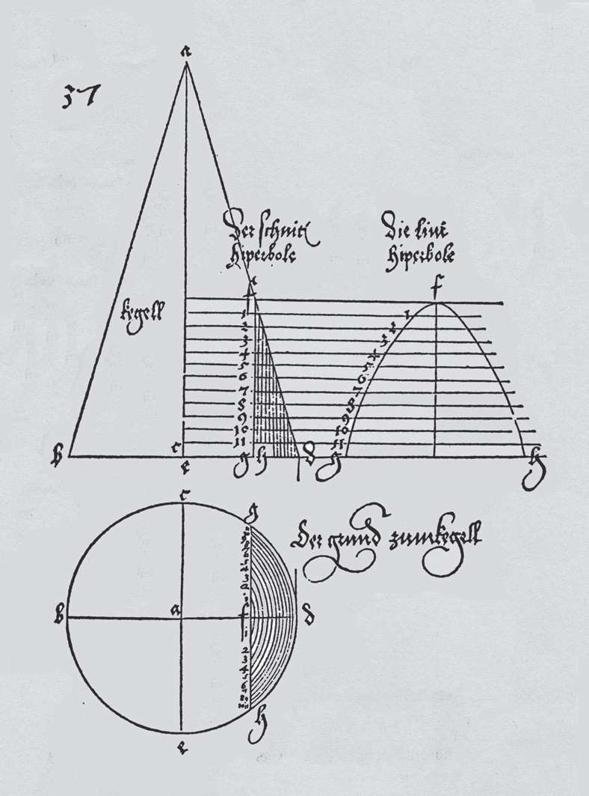
如何绘制圆锥曲线——《量度四书》中记载的绘制抛物线的方法。
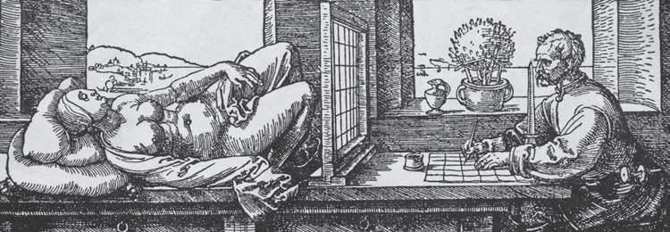
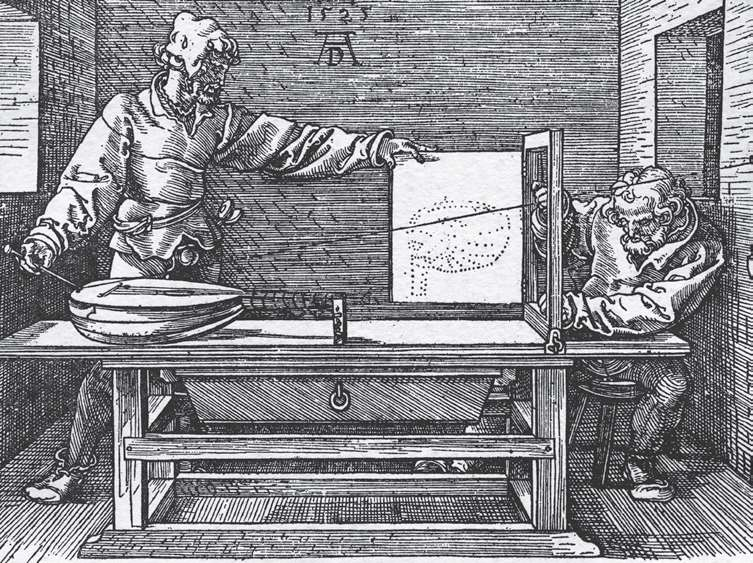
丢勒创作的两幅版画，展示了如何利用透视法来进行绘画。
阿尔布雷希特·丢勒（1471—1528）
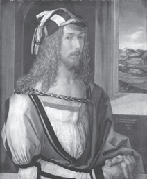
1471年，丢勒出生于现在德国的纽伦堡，在那里接受了画家和雕刻师的训练。完成学业后，丢勒游历了德国并于1494年访问威尼斯，有机会在那里知道了帕乔利的数学著作。1495年，他在家乡纽伦堡创办了自己的工作室。除了绘画之外，他还对数学进行了深入的研究。丢勒从1505年到1507年居住在意大利，由于已经是一位绘画大师，因而在这期间，他更喜欢研究数学而不是艺术。1512年，他被任命为神圣罗马帝国皇帝马克西米连一世的御前画家。1520年，查理五世重新任用了他。除了《量度四书》以外，丢勒还撰写了《人体比例四书》（Four Books on Human Proportion）。
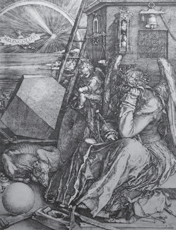
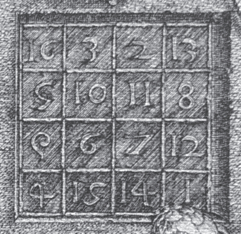
丢勒的《忧郁之一》以及幻方的细节图。从这幅作品中我们可以看出，丢勒已将自己的数学知识与绘画创作紧密地联系在了一起。
最后，该书介绍了透视法的原理。丢勒创作了许多版画，通过它们说明了如何利用透视法来描绘对象。
丢勒最著名的版画或许就是《忧郁之一》（上图）。在这幅作品中，丢勒展示了用透视法绘制不同对象的技巧，特别是位于画面左侧似乎像是菱体的物体。右侧是一个由数字组成的幻方，任意方向上的四个数字连成一条直线，每条直线上的数字之和相等。此外，幻方中还包含了这幅作品的创作日期：1514年。
几个世纪后，艺术与数学之间的结合再次以同样的生机活力展现在世人面前。20世纪初迎来了抽象艺术的巅峰时刻。艺术史学家露西·阿德尔曼和迈克尔·康普顿就这一时期写道：“首先，人们大都对非欧几里得几何和/或高维几何感兴趣……这一时期标志着透视法的失败，转而由系统性较小的不同标准取代。如同几何图形一样，艺术家的想法是要将艺术简化为特定的元素，并且利用与这一想法有关的数字比例和网格比例。数学文本中提取的元素经常出现在绘画中。最后，机器与机器制造出的产品往往代表了简单的几何图形，并通过这种方式与发展和现代化产生了联系。”
变形的骷髅头
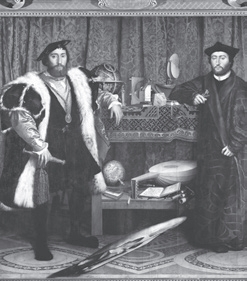
歪像（Anamorphosis）是一种只有站在特定的观察位置或者通过设备改变观察者的视角才能清楚地辨认出所画对象的绘画效果。最著名的歪像作品就是汉斯·贺尔拜因（1497—1543）的《大使们》（The Ambassadors）。在画面的下半部分有一个扭曲的骷髅头，只有在画的一侧，差不多在与骷髅头水平的位置才能看到正常视角下的图像。
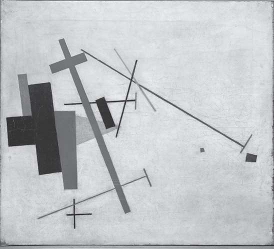
《绝对主义的创作》（Suprematist Composition），卡济米尔·马列维奇绘，1915年。我们在许多作品中可以发现，抽象派画家也是以几何与黄金比例为出发点进行创作的。
对于艺术和数学这两门学科来说，这是一个具有创造性的欢乐时刻。1912年，瑞士画家、雕塑家马克斯·比尔的一番话颇具革命性：“这一新概念的出发点可能来源于康定斯基的《论艺术中的精神》（Ueber das Geistige in der Kunst），该书提出了艺术创作的前提是用数学概念来代替艺术家的想象力。”
皮特·蒙德里安用下面的一段话说明了这种变化：“新造型主义源于立体主义，我们也可以将其称为‘真实的抽象绘画’，因为抽象的概念（如同数理科学一样，但还没有达到绝对的程度）可以在绘画中通过真实的塑造表达出来。彩色的矩形平面组合在一起表达了一种更深层次的现实，而且是通过可塑造的关系表达而不是自然外观来触及我们……新造型主义将美学平衡传达到这些关系中，通过这种方式表达出新的和谐。”马克斯·比尔定义了这种理解艺术的新方法：“严格意义上讲，艺术中的数学概念并不是数学，甚至可以说这种方法很难用精确的数学来表达我们的理解。与此相反，它是由和谐与关系构成，由包含个人背景的规则构成，如同数学中的创新元素来源于创新者的思想。”
20世纪的许多著名艺术家有着鲜明的数学特点，他们的许多奠基之作都是以数学为基础，甚至将数学作为灵感的源泉。我们会想到人人皆知的埃舍尔，他是20世纪最受欢迎的艺术家之一，此外还有整体的艺术运动，比如至上主义或立体主义。立体主义的分支称为黄金分割派，其根本思想是寻求普遍的形式。立体主义的黄金分割派由马塞尔·杜尚倡导建立，著名的支持者包括勒·柯布西耶、胡安·格里斯、费尔南德·莱热。